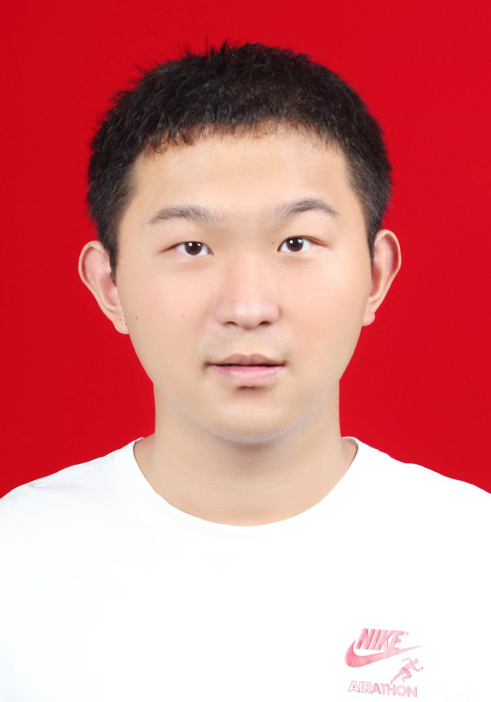

Group
Home Research Publications Activities Group
Master of Philosophy
Kai Li, 2022 - 2025. Co-advised with Dr. Kun Yang.

Yi Zhuang, 2024 - 2027. Co-advised with Dr. Kun Yang. 
Excellent Talents Program of UESTC for Undergraduates
Junlong Ke, 2021 - 2025.

Bohao Yang, 2021 - 2025.